NOTE: The file format list was not originally created by me, and was originally created by Meorge (on RVLution). So credit goes to him for the list (and me for adding extra file formats/info, and publishing it here).
Here's the list, with some extra file formats/info added, plus along with some other necessary information.
This list is sorted alphabetically. I tried to include the necessary and true infos I've gathered and found.
This list is always incomplete, any new,and necessary, file extensions/formats (even if they're embedded/located inside of other files)
in the NSMBWii/NewerSMBW game (or other NSMBWii game mod projects) only, and/or necessary new infos to the list (and/or about the file extensions/formats) are always permitted.
You can post whatever new/necessary/useful file extensions/formats and infos about them, and if I feel that it's or may be necessary, I'll add them to the list.
You're also free to start digging into the .arc files or whatever else files (or even search for some files on the NSMBWii disc, or NewerSMBW patch), if you wish to
add file formats/extensions (whether if they're internal or external on the NSMBWii disc or NewerSMBW patch) to the list, too.
File Extension
Full Name{s} (of file extension abbreviation)
Description/Info
Documented?
NewerSMBW-only file format?
.arc
U8 Archive
Wii Uncompressed U8 Archive File. These archives cover up most of NSMBWii/NewerSMBW. These files are originally created by Nintendo's darch.exe application from their RVL SDK, be aware the SDK is illegal to download/get. There are also many applications, such as CTools/SZS Modifier, Wii.cs Tools, and BrawlBox that can edit or create .arc files, and does not require any portions of Nintendo's stuff.
✔ Yes, fully
✘ No
.bdof
Binary Depth Of Field (?)
This is normally used for controlling the blurness/focus/sharpness of objects/etc. in the NSMBWii levels. They are located in the /Env/Env_course.arc/dof/ folder in NSMBWii. To edit these files, you can use Wexos's Post-Effect Editor to do so.
✔ Yes, not much
✘ No
.bfog
Binary Fog (?)
This is normally used for controlling the fog/visibility of objects/etc. in the hint movies in Peach's Castle, NSMBWii worldmaps, and NSMBWii levels. They are located in the /Env/Env_course.arc/fog/, /Env/Env_movie.arc/fog/, and /Env/Env_world.arc/fog/ folder in NSMBWii. There's no known editor that can edit these files, so you'll have to hex edit these files to change the fog/visibility.
✘ No
✘ No
.bin
Binary
Raw Binary File. Such files are commonly found in NSMBWii/NewerSMBW. You may need to hex edit these files to edit them and to change stuff in the game, or maybe you can open them with a program, but it depends on the .bin file's purpose(s), though.
If it's the staffroll.bin file from NSMBWii, get the NSMBWii Staffroll Editor here.
If it's the NewerSMBW NewerStaffRoll.bin file, get RoadrunnerWMC's Newer Credits Editor here.
If it's the NewerSMBW LevelInfo.bin file, get RoadrunnerWMC's Newer Level Info Editor here.
If it's the NewerSMBW Messages.bin file (for the message boxes that pop up when you hit the speaker box block in NewerSMBW), get RoadrunnerWMC's Newer Message Editor here. These files are also found in many level/worldmap NSMBWii/NewerSMBW tileset files (for storing textures/animations/behaviors) as well, and they're used for the Title Screen level replays (in the /Replay/title folder in NSMBWii, or in the /TitleReplay folder in NewerSMBW). The Title Screen level replay .bin files basically contain Wii Remote button presses values to control the level (they're not video files), and requires hex editing to edit and can take weeks, maybe more, to successfully get the results you want when editing the Title Screen level replay .bin files.
❓ Maybe yes, Maybe not
❓ Maybe yes, Maybe not
.blight
Binary Light (?)
This is normally used for controlling the lighting effects of objects/etc. in the hint movies in Peach's Castle, NSMBWii worldmaps, and NSMBWii levels. They are located in the /Env/Env_course.arc/light/, /Env/Env_movie.arc/light/, and /Env/Env_world.arc/light/ folder in NSMBWii. To edit these files, you can use Wexos's Post-Effect Editor to do so. They are probably controlled from a .blmap file, but I'm not sure exactly.
✔ Yes, not much
✘ No
.blmap
Binary Light Map (?)
This is normally used to map the position of the lighting effects of objects/etc. in the hint movies in Peach's Castle, NSMBWii worldmaps, and NSMBWii levels. They are located in the /Env/Env_course.arc/light/, /Env/Env_movie.arc/light/, and /Env/Env_world.arc/light/ folder in NSMBWii. To edit these files, you can use Wexos's Post-Effect Editor to do so. They probably control a .blight file, but I'm not sure exactly.
✘ No
✘ No
.bmg
Basic Messages (?) OR Binary Messages (?)
This file is used to store many of the messages/texts in the game. It's always included in the Message.arc file in NSMBWii/NewerSMBW. There's the SZS Modifier/CTools applications to edit .bmg files. Although, SZS Modifier cannot edit any text in a .bmg file longer than the original and it cannot open a .bmg file, if it's not in an .arc file, unlike CTools. You can also convert .bmg files to .txt using Wiimm's SZS Tools.
✔ Yes, fully
✘ No
.bnr
Banner
Contains the information for the animated icon of the channel in the Wii Menu and when you click on it. There's only one file (opening.bnr) in NSMBWii. It's pointless to edit it and use it in a Riivolution patch, due to the fact that Riivolution never shows the previews of that file. There are lots of tools available on the web to edit this file and tutorials on YouTube and by a Google search, on how to edit this file.
✔ Yes, fully
✘ No
.brbnk
Binary Revolution MIDI Bank
Wii NW4R MIDI Sound Bank File. These files are usually located INSIDE the .brsar file. They contain a pack .brwav (or .rwav) files (for the samples/instrument/etc. data when playing the .brseq files), encoded usually in 4-bit NGC DSPADPCM, 8-bit PCM, or 16-bit PCM. The .brwav files can also be looped, too. These files are originally created by Nintendo's SoundMaker.exe application from their NW4R SDK, be aware the SDK is illegal to download/get. There is one editor, BrawlBox, which can edit .brbnk files, and does not require any portions of Nintendo's stuff.
✘ No
✘ No
.breff
Binary Revolution Visual Effect(s)
Wii NW4R visual effect(s) file. They contain information on how to show textures/color on visual effects from the .breft file. In NSMBWii, they are located in the /Effect folder. These files are originally created by Nintendo's EffectMaker.exe application from their NW4R SDK, be aware the SDK is illegal to download/get. You can use BrawlBox, Wiimm's SZS Tools, or BREFF Editor to edit .breff files, and does not require any portions of Nintendo's stuff.
✔ Yes, fully
✘ No
.breft
Binary Revolution Visual Effect(s) Textures
Wii NW4R visual effect(s) textures file. These files are linked to a .breff file. They contain the textures/colors for the visual effects of the .breff file to show. These files are originally created by Nintendo's EffectMaker.exe application from their NW4R SDK, be aware the SDK is illegal to download/get. You can use BrawlBox or Wiimm's SZS Tools to edit .breft files, and does not require any portions of Nintendo's stuff.
✔ Yes, fully
✘ No
.brfnt
Binary Revolution Font
Wii NW4R font file. These files usually contain the fonts (including picture-icons of player heads, castle icons, etc.) of NSMBWii/NewerSMBW. You can also use a program called BRFNT2TPL to convert it to a .tpl file, then edit the .tpl and convert it back to a .brfnt file. These files are originally created by Nintendo's fontcvtr.exe application from their NW4R SDK, be aware the SDK is illegal to download/get. You can also use RoadrunnerWMC's BRFNTify Next program here, to view and/or extract the textures of a .brfnt file, and does not require any portions of Nintendo's stuff.
✔ Yes, fully
✘ No
.brlan
Binary Revolution 2D Layout Animation
Wii NW4R layout animation file. These files are used in many .arc files and are linked to .brlyt files for animating them. These files are originally created by Nintendo's LayoutEditor.exe application from their NW4R SDK, be aware the SDK is illegal to download/get. There is one tool that can parse (not edit) .brlan files, Wii LayoutEditor (not Nintendo's version), to simply change values/etc. without the need of hex editing, you can also use Benzin to convert them to .xmlan format and vice versa, so that you can edit them without any need of hex editing, and does not require any portions of Nintendo's stuff.
✔ Yes, fully
✘ No
.brlyt
Binary Revolution 2D Layout
Wii NW4R layout file. These files are used in many .arc files for layouts (in the /Layout folder in NSMBWii, or in the /Layouts and/or /Others folder in NewerSMBW), e.g. color/lighting/positioning of showing textures. They're also used to set up stuff like Graphical Intefaces and Menus. These files are originally created by Nintendo's LayoutEditor.exe application from their NW4R SDK, be aware the SDK is illegal to download/get. There are two editors, Wii LayoutEditor (not Nintendo's version) and Treeki's LayoutStudio, to simply change values/etc. without the need of hex editing, you can also use Benzin to convert them to .xmlyt format and vice versa, so that you can edit them without any need of hex editing, and does not require any portions of Nintendo's stuff.
✔ Yes, fully
✘ No
.brres (or .brtex)
Binary Revolution Resource Archive
A resource file, such files are usually INSIDE many .arc files (in the /Object and/or /MovieDemo folder in NSMBWii, or in the /SpriteTex folder in NewerSMBW), usually for holding 3D/2D models/animations/layouts/etc. In the /HomeButton2 folder in NSMBWii, there's one .brres file (with a file extension change to .brtex) containing one .tex0 file (containing the texture of the HOME Button disallowed icon). They are also used for the backgrounds of some NewerSMBW worldmaps as well. These files can be opened up using BrawlBox and SZSModifier/CTools. Although, SZS Modifier cannot open a .brres file, if it's not in an .arc file, unlike BrawlBox or CTools.
✔ Yes, fully
✘ No
.brsar
Binary Revolution Sound Archive
Wii NW4R Sound Archive File. This archive contains the sound effects of NSMBWii and controls the .brstm music/BGM files, this file format is also commonly used in other Wii games (including the Wii System Menu) for sound effects and/or .brstm music, too. These files are originally created by Nintendo's SoundMaker.exe application from their NW4R SDK, be aware the SDK is illegal to download/get. NSMBWii/NewerSMBW only contains one .brsar (in the /Sound folder in NSMBWii, or in the /Music/rsar/ folder in NewerSMBW). There is one editor, BrawlBox, which can edit .brsar files, and does not require any portions of Nintendo's stuff. Although, BrawlBox has troubles editing NSMBWii's .brsar file, requiring you to hex edit to change sound effects, a video tutorial on editing the sound effects can be found in this thread here. If you're replacing .brstm files, you'll need to patch the .brsar file first, for the .brstm files to loop properly, more info here.
✔ Yes, not much
✘ No
.brseq (or sometimes .rseq)
Binary Revolution MIDI Sequence
Wii NW4R MIDI Sequence Sound File. These files are usually located INSIDE the .brsar file. They contain instruments/notes data for playing the .brwav files (inside the .brbnk file, that's linked to the .brseq file). These files are originally created by Nintendo's SoundMaker.exe application from their NW4R SDK, be aware the SDK is illegal to download/get. There's only one program available to edit these files, Wexos's Toolbox, and does not require any portions of Nintendo's stuff. You can also hex edit these files to change the instruments/notes, the BrawlBox Team was also working on a way to edit .brseq files or convert them to SMF MIDI files (the Windows-readable .mid files), but I haven't heard any recent news about it. You can also use a separate program called RSEQ2MIDI (which is on ZementBlock's Google Drive), to convert .brseq files to SMF MIDI files.
✘ No
✘ No
.brstm (in NewerSMBW: .er)
Binary Revolution Audio Stream
Wii NW4R Stream Sound File. These files are external and linked/controlled from a .brsar file and contain the music/BGMs of the game and its levels. They support these encodings, 4-bit NGC DSPADPCM, 8-bit PCM, and 16-bit PCM. They can contain a maximum up to 16channels and 8streams (or 8channels and 4streams for NSMBWii/NewerSMBW). There's a file extension change to .er in NewerSMBW. Such files are located in the /Music and/or /Music/stream folder in NewerSMBW, or in the /Sound/stream folder in NSMBWii. These files are originally created by Nintendo's SoundMaker.exe application from their NW4R SDK, be aware the SDK is illegal to download/get. There are many .brstm converters, including Brawl Custom Sound Maker GUI, Multi BRSTM Builder GUI,
and BrawlBox. Some .brstm/.er files, mapXX.er (where XX is the worldmap number) in NewerSMBW, and/or .brstm files starting with STRM_ are multichannel. Also, too if you're replacing the .brstm files in NSMBWii (not NewerSMBW), you'll need to patch the .brsar file with hamradio's BRSAR patcher. Make sure your .brstm filesize is lesser than or equal to 16MB (16777215 bytes) before you patch the .brsar with it. There's no need to do any patching if you're replacing the .er files in NewerSMBW. If you want to patch the .brsar with bigger .brstm files (greater than 16MB), use Better Wii BRSTM BRSAR Patcher.
✔ Yes, not much
✔ Kind of (for the .er files)...
.brwsd (or sometimes .rwsd)
Binary Revolution Waveform Sound Data Archive
Wii NW4R Wave Sound Archive File. These files are usually located INSIDE the .brsar file. They contain a set of .brwav (or .rwav) files (sometimes for sound effects), encoded usually in 4-bit NGC DSPADPCM, 8-bit PCM, or 16-bit PCM. The .brwav files can also be looped, too. There is one editor, BrawlBox, which can edit .brwsd files, and does not require any portions of Nintendo's stuff.
✘ No
✘ No
.brwav (or sometimes .rwav)
Binary Revolution Waveform Sound
Wii NW4R Wave Sound File. These files are usually located INSIDE a .brbnk/.brwsd file (inside the .brsar file). They may be encoded in 4-bit NGC DSPADPCM, 8-bit PCM, and 16-bit PCM. They're usually for sound effects and the sounds of instruments (if inside an .brbnk file). These files are originally created by Nintendo's SoundMaker.exe application from their NW4R SDK, be aware the SDK is illegal to download/get. Such files can be decoded/played using VGMStream, and does not require any portions of Nintendo's stuff.
✘ No
✘ No
.bti
Basic Texture Image (?) OR Binary Texture Image (?)
Usually a really obscure image format. They're located in /Env/Env_course.arc/dof/ folder, the save_banner.arc file, and the /Object/Mask.arc file in NSMBWii. Also, in a NSMBWii hack by Skawo (Another Super Mario Bros. Wii), there's also one in the /sample folder of the hack. They can also be opened up with Wiimm's SZS Tools, CTools, or Wexos's Toolbox.
✔ Yes, fully
✘ No
.bwav
Binary Waveform (?)
These files are located in the /HomeButton2/SpeakerSe.arc file in NSMBWii. They contain the P1/P2/P3/P4 Wii Remote connect sound effects and the Wii Remote Volume +/- toggle sound effect (that plays when pressing the {+}/{-} buttons to change the volume on the Wii Remote). I think these sound files normally output to the Wii Remote speaker. These are RAW/Headerless Mono (1channel) Big-Endian 16-bit PCM audio files, sampled at 6000Hz. They can be opened using Audacity, by clicking File --> Import --> Raw Data and selecting the .bwav file. And can possibly be opened up in any audio editor, if it supports importing RAW/Headerless audio files.
✘ No
✘ No
.csv
Comma Separated Values
In NSMBWii, these files are usually used for the worldmap routes/path data. They're located at /WorldMap/RouteInfo.arc in NSMBWii. There are also standalone .csv files in the /HomeButton2 folder of NSMBWii (which usually contains the data/messages or whatever of the HOME Menu). You'll have to hex edit this file if you're willing to change stuff in the HOME Menu. Depending on the .csv file (or it's contents/purpose), you might be able to use Notepad++ to edit them. If you're willing to edit the worldmap routes/path data, see this tutorial here.
✔ Yes, fully
✘ No
.dol
Dolphin Executable
Nintendo Gamecube (codename "Dolphin") and Wii game disc executable file. The .dol file that contains the main and most of the code & assembly (ASM) for the game on the disc is called main.dol. This is a PowerPC binary file. You can use IDA Pro to decompile/disassemble the .dol file to PowerPC Assembly Language so you can modify portions of the game, but don't expect this to be easy and a short task.
✔ Yes, not much
✘ No
.img
Image
On the NSMBWii game disc, this file is usually an apploader (probably has something to do with loading the game disc or something). There's one .img file called apploader.img on the NSMBWii disc.
✘ No
✘ No
.kpbin
Koopatlas Binary Map
In NewerSMBW, these files usually contain the worldmap data/info. They can be found in the /Maps folder in NewerSMBW. They are created by the Newer Team, via their application Koopatlas (since Koopatlas isn't available in an .exe binary file, you'll only find the source code for download, so the link I gave you to Koopatlas will lead you to a compiled/binary .exe file so that you can run it on Windows, thanks to Kinnay {Kamek64}). The .kpbin files are usually generated from a .kpmap file (the .kpmap file is the Koopatlas-readable version of the worldmap). To generate a .kpbin file (the NewerSMBW-readable version of the worldmap) from a .kpmap file, you'll have to click File --> Export in Koopatlas.
✘ No
✔ Yes
.LH
LZ77+Huffman Compress
Wii ntcompress.exe File. They're normally for compressing certain files (mostly .arc). Some files on the Mario Sports Mix game disc uses this compression. The .arc/.kpbin (and probably many others?) files in NewerSMBW are compressed with this same compression (as they end in .LH). These files are originally created by Nintendo's ntcompress.exe application from their RVL SDK, be aware the SDK is illegal to download/get. They're only two programs to decompress .LH files without using any portions of Nintendo's stuff, Treeki's LHDecompressor (you'll need to compile this as this is C++ source code, or download the .exe binary I compiled here, to run it on Windows), and
RoadrunnerWMC's LH Decompressor Python script (you may need to compile this Python script, or also otherwise run it in the Python terminal?). Unfortunately, there's no program to compress files to .LH, only ntcompress.exe can do so...
✘ No
✔ Yes
.LZ
LZ11 Compress OR LZ77 Compress
Wii ntcompress.exe File. They're normally for compressing certain files (mostly .arc). The .rel files in NSMBWii are compressed with the LZ11 compression, and in NewerSMBW, the .tpl files in the CreditsBG.arc file are also compressed with this same LZ11 compression. And in all NSMBWii/NewerSMBW tileset .arc files, a file called {TilesetName}_tex.bin.LZ (where {TilesetName} is the name of the tileset, without the .arc file extension) in the BG_tex folder, that stores the images for tilesets, is compressed with the LZ77 compression. These files are originally created by Nintendo's ntcompress.exe application from their RVL SDK, be aware the SDK is illegal to download/get. They're two programs to decompress or compress to LZ11/LZ77 without using any portions of Nintendo's stuff, Wexos's Toolbox (can do LZ11 and LZ77) and "nlzss" (doesn't support LZ77, and for LZ11 decompressing, you may need to run/use "nlzss" in a Python 3.x terminal).
✘ No
✘ No
.pcm
Pulse Code Modulation
This file is linked to a .wt file (if it has the same name as the .wt file), which is an MIDI bank "info/meta/table" part. There's one .pcm file located inside the file /HomeButton2/HomeButtonSe.arc in NSMBWii. The .pcm files contain all the RAW waveform/audio data (originally and mostly the HOME Menu sound effects, and these .pcm files doesn't contain any header information), that are played by the .mid files (linked to the .wt file). A .pcm file can be encoded in 4-bit NGC DSPADPCM and 16-bit PCM (and maybe 8-bit PCM?). They can be opened using Audacity, by clicking File --> Import --> Raw Data and selecting the .pcm file, although it might sound "staticy" and some sounds may be slowed down or speeded up than normal. And .pcm files can possibly be opened up in any audio editor, if it supports importing RAW/Headerless audio files.
✘ No
✘ No
.mid
Musical Instrument Digital Interface
This file is usually an SMF MIDI file (version/format 0 or 1). There are many of these files in the /HomeButton2/HomeButtonSe.arc file in NSMBWii. The SMF MIDI files are linked to a .wt MIDI bank for playing the sound effects of the HOME Menu (the sound effects are located inside the .pcm file with the same filename as the .wt file). The SMF MIDI files can be opened/played in Windows Media Player (and possibly any other Media Player, if it supports opening/playing SMF MIDI files) and can also be edited using Anvil Studio, or any other SMF MIDI editor available.
✔ Yes, fully
✘ No
.rel
Relocatable Module OR Relocs
A compiled relocatable object/scriptfile/module, usually to help function certain or all stuff in the game, I've heard that they MAY contain portions of the game's code. They're usually compressed with the Nintendo ntcompress.exe LZ11 compression in NSMBWii (as they end in file extension .rel.LZ). They are located in the /rels folder of NSMBWii. You can use IDA Pro to decompile/disassemble the .rel file, so you can modify it, but don't expect this to be easy and a short task.
✔ Yes, not much
✘ No
.tpl
Texture Palette
Wii texconv.exe Texture Image File. They're basic image/texture files. In NSMBWii, they're mostly in .arc files, they're also used in .brlyt/.brlan files for layouts. These files are originally created by Nintendo's texconv.exe application from their RVL SDK, be aware the SDK is illegal to download/get. In NSMBWii, there's ONE stanalone .tpl file in the /HomeButton2 folder (containing the texture of the HOME Button disallowed icon). In NewerSMBW, they're standalone .tpl files for the level screenshots in the /LevelSamples folder. There are many programs, including BrawlBox, SZS Modifier/CTools, or
Wiimm's SZS Tools to edit/create .tpl files, and does not require any portions of Nintendo's stuff. Although, SZS Modifier cannot open a .tpl file, if it's not in an .arc file, and both SZS Modifier/CTools doesn't support opening/editing .tpl files in the GX_TF_CI4 (commonly called CI4, or C4) or GX_TF_CI8 (commonly called CI8, or C8) format.
✔ Yes, fully
✘ No
.txt
Text
There's one file named config.txt in the /HomeButton2 directory of NSMBWii. It's probably the configuration file for probably refferring to a .brlyt file to the HOME Menu (that menu that appears when you press the HOME button on your Wii Remote). In NewerSMBW, for the worldmaps List.txt file, it contains the list of the worldmap .kpbin files. You can edit it with any text editor, but keep in mind that the List.txt file uses the Unix (LF) line feed format, so whichever text editor you're using, make sure it supports the Unix (LF) line feed format. Don't use MS Notepad to edit this file, since it doesn't support the Unix (LF) line feed format.
✘ No
✔ Kind of (for the List.txt file)...
.wt
Waveform Table (?)
Wii dls1wt.exe File. There's one .wt file inside the /HomeButton2/HomeButtonSe.arc file in NSMBWii. From what I know, it's a MIDI bank "info/meta/table" part, linked to a .pcm file (that has the same filename as the .wt file), containing the waveform data all together (for the instruments/notes/sample data for playing the SMF MIDI files {linked to the .wt file}), that may be encoded in 4-bit NGC DSPADPCM or 16-bit PCM (or also encoded as 8-bit PCM?). These files are originally created by Nintendo's dls1wt.exe application from their RVL SDK, be aware the SDK is illegal to download/get.
✘ No
✘ No
_________________________ Don't expect me to be very active here, since I have plans, and many other things in my life.
...and forgot BRFNT-ify next by RoadrunnerWMC. _________________________ Don't expect me to be very active here, since I have plans, and many other things in my life.
Awesome table ! Care about explaining some of the syntax you used in a PM ?
What do you mean by syntax? I just used HTML/CSS to make and pretty up the table. If you're looking for the table code and HTML/CSS of it, you can simply hit the Quote button on my post to get it.
And about explaining it, it's pretty complicated...
- You can find .bin files inside tilesets, they are used to store the texture and the animations (both level and map tilesets).
- BMG files don't need to be inside an ARC to be recognized by CTools.
- You can edit BRFNT by using BRFNT2TPL to convert it, editing the TPL and converting back.
- You can find a RSEQ2MIDI on ZementBlock's Google Drive.
- BTI can be opened in CTools
- LZ files can be uncompressed by LZ77Mii in Wii.cs Tools.
- You can open .pcm files in Audacity (File>Import Raw Data), but some play at a slower pace than normal.
All of those infos are all added. Also, does LZ77Mii work with the LZ files in NSMBWii? Because AFAIK, LZ77Mii can only compress/decompress LZ files with the LZ77 ascii header (and there's no header in the LZ files in NSMBWii).
- BRTEX can also be opened in BrawlBox
- You forgot .er files.
Didn't I already mention that BRRES files can be opened in BrawlBox, and also that BRRES are also BRTEX files? And about ER files, didn't I already mentioned it near the BRSTM files info in the list (on the table)? _________________________ Don't expect me to be very active here, since I have plans, and many other things in my life.
Then why when I open the HomeButtonIcon.brtex file in BrawlBox, BrawlBox always recognizes it as a BRRES file?
Also I added the link to the RSEQ2MIDI program to the post. _________________________ Don't expect me to be very active here, since I have plans, and many other things in my life.
NOTE: The tutorial was not written by me, and was written by John Telstra (on RVLution). So credit goes to him for the tutorial (and me for adding extra info, improving some grammatical errors, and publishing it here).
Posted by John Telstra
Don’t like the name of a NSMBW Tileset?
If anybody keeps bugging people on how to rename custom tilesets, you’ve bumped into the right topic. (No ASM Hacks needed!!!)
What you’ll need is: Reggie Level Editor, UltimateU8 from the Wii.cs tools (or any other Wii U8 archive file utility), a Wii or WiiU(vWii), and a tileset file (it can start with Pa0, Pa1, Pa2, and Pa3).
We’ll start with the tileset “Pa1_StarHaven.arc” from NewerSMBW.
Step 2: Get a tileset file (.ARC) that you would like to edit. For example I’m using “Pa1_StarHaven.arc” from NewerSMBW, and open it.
Step 3: Then rename the first file in the ARC archive “d_bgchk_Pa1_StarHaven.bin” (might be different if you're using a different tileset) to something fitting like “d_bgchk_Pa1_StarryWorld.bin” or anything else.
Step 4: Now rename the second file in the ARC archive “Pa1_StarHaven_tex.bin.LZ” (might be different if you're using a different tileset) to something fitting like “Pa1_StarryWorld_tex.bin.LZ” or anything else.
Step 5: Now rename the third file in the ARC archive “Pa1_StarHaven.bin” (might be different if you're using a different tileset) to something fitting like “Pa1_StarryWorld_tex.bin.LZ” or anything else.
Then rename the fourth file in the ARC archive “Pa1_StarHaven_hd.bin” to something fitting like “Pa1_StarryWorld_tex.bin.LZ” or anything else.
Step 7: Now in the level editor go to “Area Settings” (which is the crate icon). Now in the “Tilesets” section and choose which suite you want to put your tileset. Standard Suite refers to Pa0 tilesets, Stage Suite refers to Pa1 tilesets, Background Suite refers to Pa2 tilesets, and Interactive Suite refers to Pa3 tilesets. Now go to the boxes in whichever suite, then go to “Custom Filename...”, then add the file name of your tileset. The Tilesets must be located at the Stage/Texture folder (of the NSMBWii disc or Riivolution patch folder) for Reggie! To recognize it. Do not add the extension “.arc” at the end of the filename.
Step 8: Test and Improve!!!
NOTE: You can’t rename the tileset filename just like that without renaming the contents of the tileset, because Reggie! wouldn’t recognize the contents of the tileset and will not load the tileset up.
Custom tilesets can crash the game. If you’re willing to use a custom tileset with Riivolution, here's how to load custom tilesets with Riivolution: http://rvlution.net/wiki/NSMBW_Custom_Tileset_XML.
Note that I tried this before and it works perfectly fine. It should work find for you all here.
If you guys need help, post a reply on my topic or PM me. Have a splendid day.
_________________________ Don't expect me to be very active here, since I have plans, and many other things in my life.
You can also check which region of the game you have by looking at the NSMBW disc.
At the bottom of the disc, you should see something like, RVL-B0-SMN or such. And the SMN part can determine which region of the game you have.
SMNE is NTSC-U (United States / North America)
SMNP is PAL (Euorpean/Austrailian)
SMNJ is NTSC-J (Japanese)
SMNK is NTSC-K (South Korean)
SMNC is NTSC-C (Chinese)
SMNW is NTSC-C (Taiwanese) _________________________ Don't expect me to be very active here, since I have plans, and many other things in my life.
NOTE: The tutorial was not written by me, and was written by John Telstra (on RVLution). So credit goes to him for the tutorial (and me for adding extra info, improving some grammatical errors, and publishing it here).
Posted by John Telstra
Hey guys, today I’m gonna show you how to get the ability to put longer text in a BMG File from a Wii Game. If you all want longer text in a BMG File but you don’t want to Hex Edit, etc., You bumped into the right Tutorial.
Are you getting this Message when trying to edit the text with longer characters than the original in SZS Modifier?
Step 1: Get a BMG File from a Wii game (since I'm posting this tutorial here on a NSMBWii modding board, I'll obviously use NSMBWii).
Step 2: After you got a BMG File, Download CTools here and run the installer.
Step 4: After installing it, Locate and Open BMG Editor on your PC’s Desktop. Then open your BMG File. Then Try putting longer text than the original in one of the message boxes.
Step 5: After that, Save the BMG File and test it on one of your Wii Games to see if it really works.
If it gives you a Message Something like this
after saving the files, Ignore it and Click Continue.
It should work with any of your Wii Games. If it doesn’t, send me a PM about it or Post Whatever about it here. Happy Hacking.
_________________________ Don't expect me to be very active here, since I have plans, and many other things in my life.
NOTE: The tutorial was not written by me, and was written by John Telstra (on RVLution). So credit goes to him for the tutorial (and me for adding extra info {and my adjustments/modifications}, improving some grammatical errors, and publishing it here).
Posted by John Telstra
Now if anyone is bugging on how to run cheat codes in your Wii game using Riivolution in the forums/etc., Here’s a brief tutorial on how to do it.
Requirements
-Riivolution.
-SD card w/ at least 1 or 2 GB or USB device.
-The /codes directory on the SD/USB Device, containing the cheat codes in a .gct file. NOTE: This tutorial doesn't provide any instructions on how to create a .gct file for the cheat codes (I assume you got it all created/ready on your SD/USB device), this tutorial only gives you instructions on how to run the .gct file (containing the cheat codes) using Riivolution.
-The Ocarina cheat code launcher pack for Riivolution (download here).
-Your Wii game (compatible w/ your cheat code you're using).
-A Wii console (I think it also works with Wii U {vWii}).
Tutorial
Step 1: After you have extracted the Riivolution Ocarina cheat code launcher ZIP archive, there should be a folder called /riivolution on the SD or USB device. Open the /riivolution folder up, and it should contain the following files:
Step 2: After that, insert your SD or USB device into your Wii, then insert your game disc (that is compatible for the cheat codes) into your Wii, and launch Riivolution up. Enable the following options, as shown in the photo below, then hit Launch:
NOTE: It's recommended to disable other NSMBWii hacks before enabling the options shown in the picture above, as there could be conflicts w/ the cheats and the NSMBWii hacks trying to work at the same time!
After that, the codes should be good and working in the game. For an example, I applied the MoonJump cheat code (for NTSC-U) into NSMBWii. Here’s a preview:
If you have any questions or need help with the tutorial, feel free to PM me or post whatever about it here. Enjoy putting cheat codes in your game with Riivolution!
_________________________ Don't expect me to be very active here, since I have plans, and many other things in my life.
- IOS37 is required to run Riivolution, the program will ask you if you want to install it (Its safe)
Also keep in mind that if you're on the Wii U (vWii), and if Riivolution asks you to downgrade IOS37, that's means you have Riivolution v1.04, v1.03, v1.02, v1.01, or v1.00.
So you'll need Riivolution v1.05 (or better, the latest version, v1.06, at the time of this post), in order for Riivolution to work on Wii U. _________________________ Don't expect me to be very active here, since I have plans, and many other things in my life.
NOTE: The tutorial was not written by me, and was written by John Telstra (on RVLution). So credit goes to him for the tutorial (and me for adding extra info, improving some grammatical errors, and publishing it here).
Posted by John Telstra
Hello Everyone. Today I’m gonna show you how to edit the title screen in NSMBW/NewerSMBW. (since nobody posted any tutorial on how to do it). Now if you’re willing to edit the title screen for your NSMBW/NewerSMBW Hack, etc. You bumped into the right tutorial.
2. After downloading the level editor. Extract it into a folder you wish to put it in. After that, open reggie.exe in the folder you extracted the file in and choose the Game’s Stage Folder.
3. Then Browse to the Stage folder and open 01-40.arc.
4. Then move the entrance at least 4 blocks as it shows in the picture below, first. Then make your edits to the title screen.
5. Finally, You can test and Improve it!
If you have problem w/ The title screen, send me a PM about it or Post what about it here. Happy Hacking.
_________________________ Don't expect me to be very active here, since I have plans, and many other things in my life.
Because I like the current table format better. _________________________ Don't expect me to be very active here, since I have plans, and many other things in my life.
Or 534d4e57 for NSMBWii CHT (Chinese/Taiwanese version)? _________________________ Don't expect me to be very active here, since I have plans, and many other things in my life.
NOTE: The tutorial was not written by me, and was written by John Telstra (on RVLution). So credit goes to him for the tutorial (and me for adding extra info, improving some grammatical errors, and publishing it here).
Posted by John Telstra
Hello guys, today I’m gonna show you how to change NewerSMBW's ASM folder path. If you want all the ASM to load in a different folder name, you bumped into the right tutorial. Let’s get started!
Step 2: Open NewerSMBW's Loader.bin in the hex editor and You should see these words:
Step 3: Hit Ctrl-H simultaneously on the keyboard in the hex editor then it should bring up a little window. In the Find box, type NewerRes. Then think up of a word that has 8 characters and put it in the Replace box. For an example, we'll use the name "Demo-Res". Make sure to have the As Text option checked under both of the boxes! Otherwise it’ll focus on the hex values instead of the text.
NOTE: Thinking up of a word that has more or less than 8 characters, may do SEVERE damage to the Loader.bin.
Step 4: Save the Loader.bin file by pressing Ctrl-S on the keyboard. Rename the NewerRes folder to the word that you thought up (for example we used "Demo-Res". Go into the folder you just renamed and open up the following files, DLCodeEU_1.bin, DLCodeEU_2.bin, DLCodeJP_1.bin, DLCodeJP_2.bin, DLCodeUS_1.bin, DLCodeUS_2.bin, with PSPad.
Step 5: And Again, Hit Ctrl-H simultaneously on the keyboard in the hex editor then it should bring up that little window again. In the Find box, type NewerRes. Then type the word you thought up of while you were reading Step 3 in Replace box. And again, make sure to have the As Text option checked under both of the boxes! Otherwise it’ll focus on the hex values instead of the text.
line in your XML to have a different folder name instead of NewerRes, but it is not recommended since I've seen some flaws when testing it. Replace the [example] statement w/ your folder name.
If the tutorial doesn’t work, etc., send me a PM about it or Post Whatever about it here. Happy Hacking.
_________________________ Don't expect me to be very active here, since I have plans, and many other things in my life.
I could possibly do something with it if I find the source code.
Maybe build the code as an EXE binary so we can use it on Windows? _________________________ Don't expect me to be very active here, since I have plans, and many other things in my life.
You first need to name your background. For example, bgA_1111 for a Scenery
bg. Or, bgB_2354 for a backdrop bg. It doesn't matter too much. It just needs
to correspond with the 4 # pattern.
Keep in mind that the four number pattern is an hexadecimal number (ranging from 0000 to FFFF). And remember THAT YOU CANNOT edit the bgA_ or bgB_ text (before the four number pattern) or unpredictable results may happen in the game. _________________________ Don't expect me to be very active here, since I have plans, and many other things in my life.
Didn't I already mentioned the BRSAR patcher near the BRSTM files info in the list (on the table)? _________________________ Don't expect me to be very active here, since I have plans, and many other things in my life.
NOTE: The tutorial was not written by me, and was written by John Telstra (on RVLution). So credit goes to him for the tutorial (and me for adding extra info, improving some grammatical errors, and publishing it here).
Posted by John Telstra
this is for changing the “Hold The WiiMote sideways” screen in Newer. Which is this:
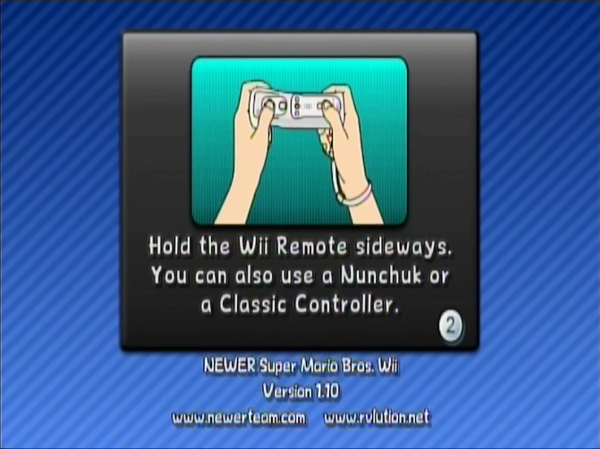
I’ve heard someone named, "somerandomdude312" created a thread that he needed help to change the “Hold the WiiMote sideways” screen in NewerSMBW/etc., If you wanted to change some parts like that in NewerSMBW, you bumped into the right tutorial.
Psst. Click One of the Spoiler tags for any of the methods in the tutorial.
Requirements
-NewerSMBW
-A Windows PC.
-CTools
-U8 Archive Opener
-A hex editor
-The file, controllerInformation.arc file in the /Others folder in Newer.
-A USB or SD Device to launch Newer
-Riivolution and Wii or Wii U
Tutorial
NOTE: This method is for changing the bottom MSG,
To change the upper MSG, look at the spoiler tag that tells you how to change the Upper MSG.
Step 1: Download NewerSMBW at the Newer Team’s Website and wait for it to download and extract it into one folder.
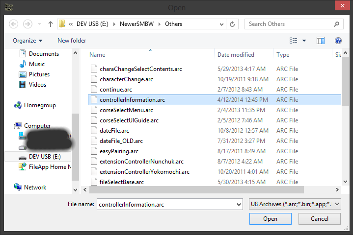
Step 2: Open the file /NewerSMBW/Others/controllerinformation.arc. Extract the file controllerInformation_07.brlyt in the ARC File w/ any U8 Archive opener (e.g. BrawlBox, SZS Modifier, SZSTool from the CTools, etc.). I recommend UltimateU8 from the Wii.cs tools, since it’s pretty much easy to use. The download link for it is here: http://code.google.com/p/showmiiwads/downloads/detail?name=Wii.cs%20Tools%200.3.rar
Step 3: Right-click on the controllerInformation_07.brlyt file in UltimateU8 and click “Extract File” and extract it where ever you want.
Step 4: Get a Hex Editor, I recommend PSPad. Download PSPad here. And extract it into one folder.
Step 5: Open the file, controllerInformation_07.brlyt with the hex editor. Search for these lines:
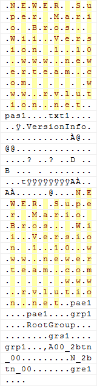
Make sure to edit the text that are highlighted in the picture!
And The
.1...1.0.
text of the message may be
.1...2.0.
instead when you look into the RLYT (since Newer Has been updated to v1.2.0).
But if it has v1.2.0 instead, your in the right spot.
And edit them with some word that you can think of.
NOTE: I haven’t known if you can put longer text in the Message. Normally it may crash the game if you put longer text.
For an example for this tutorial, we’ll change the message into “NEWER Message Edit Demo.” Then Once you’ve edited the words, it should look like this:
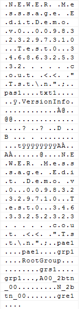
Step 6: Save the BRLYT file once done editing. And Open UltimateU8 and open the controllerInformation.arc file in the Others folder in Newer.
And Right click on the file, controllerInformation_07.brlyt and click “Delete”.
Then right-click on the blyt folder in the ARC File and click “Add file”, add the newly-modified controllerInformation_07.brlyt file in it. And click “Save”. Then Exit UltimateU8.
Step 7: Then test it to see if it works. Now it should show something like this (this is the example message we’ve used in Step 4):
NOTE: There may be a bit of an parsing issue w/ The Message Shadow/etc., depending on the message.
Requirements
-NewerSMBW
-A Windows PC
-CTools
-The file, Message.arc file in the /Message folder in the NewerSMBW Folder
-A USB or SD Device to launch Newer
-Riivolution and Wii or Wii U
Tutorial
NOTE: This method is for changing the Upper MSG,
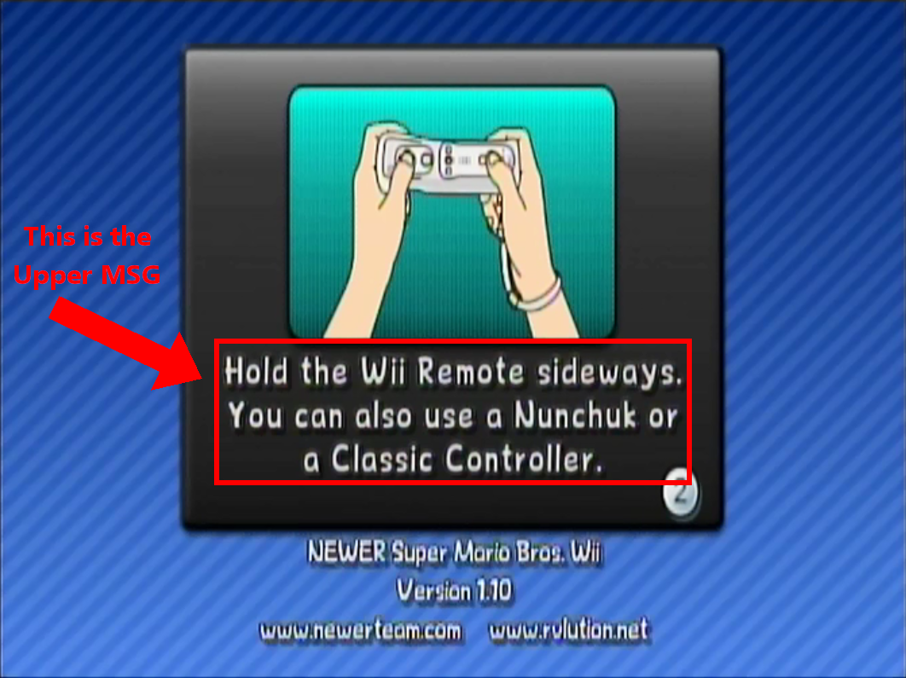
Not the Bottom MSG.
To change the upper text in the “Hold the wiimote sideways” screen in Newer, Download the CTools from The Chadsoft website. And follow the install instructions.
Open /NewerSMBW/Message/Message.arc File with the SZSTool from the CTools. Open the BMG File in it.
Find this in the BMG:
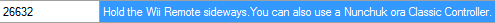
And Edit the Message to something.
For an example, we’ll edit it w/ This statement here:
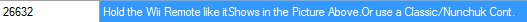
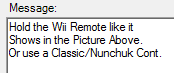
Once you’ve edited the Message in whatever statement you wanna edit, click the Update button in the BMG Editor. Then hit Ctrl-S on your Keyboard in the BMG Editor to save the BMG File then exit the BMG Editor. Then in the SZSTool Window, hit Ctrl-S on the keyboard to save the ARC File then exit the SZSTool. Then it should change to something like this when you launch it in Newer (this is the example we’ve used):
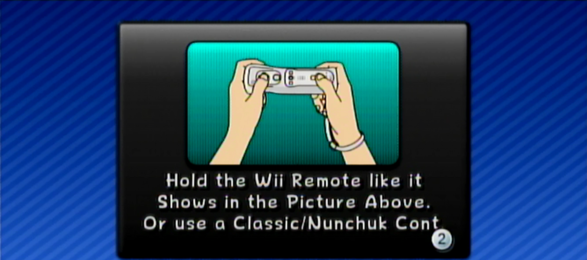
Requirements
-NewerSMBW
-A Windows PC.
-Benzin
-XML Editor
-U8 Archive Opener
-A hex editor
-The file, controllerInformation.arc file in the /Others folder in the NewerSMBW.
-A USB or SD Device to launch Newer
-Riivolution and Wii or Wii U
Tutorial
This is for changing the Stripey part of the Background of the Screen (under the bottom/upper message),
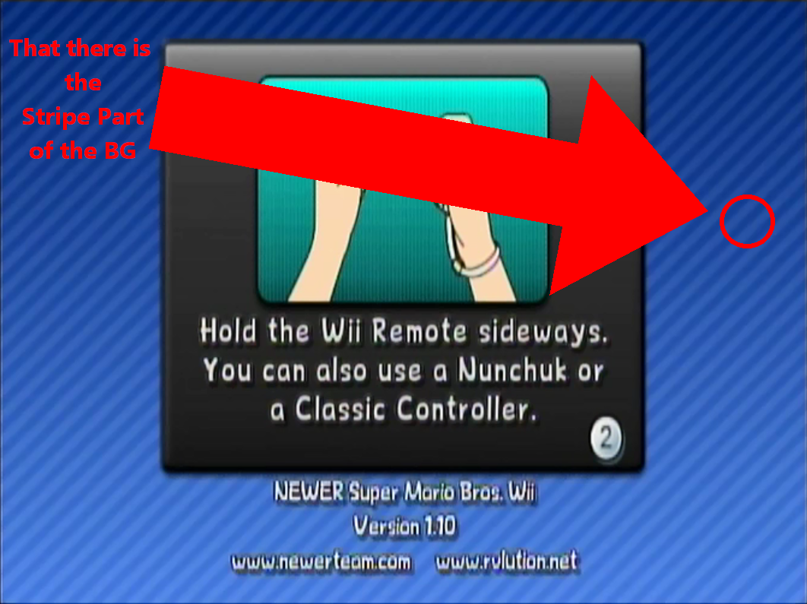
Step 1: Get a U8 Archive opener, I recommend UltimateU8 from the Wii.cs tools. The download link for it is here: http://code.google.com/p/showmiiwads/downloads/detail?name=Wii.cs%20Tools%200.3.rar. And extract the RAR Archive into one folder. After that Open UltimateU8. Open the controllerInformation.arc file in NewerSMBW/Others. Then extract the file controllerInformation_07.brlyt in the ARC File wherever you want.
Step 2: Download the XMLYT Converter (which is Benzin), (the download for it is at the bottom of the thread) and extract it into one folder. Drag the controllerInformation_07.brlyt file in the Benzin folder. Now you’ll have to convert it into XMLYT format. Run the CMD script named, CONTROLLERINFORMATION_XMLYT_CONVERT.CMD.
Step 3: Get a XML Editor, I recommend PSPad. Download PSPad here and extract it into one folder. Open the XMLYT file with PSPad. Find these lines in the XMLYT:
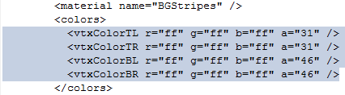
Step 4: Mess around w/ the RGBA Values/etc. (the numbers next to the r=" , g=" , b=" , a=" text in the XMLYT are the RGBA Color Values) to get the color that you want. For an example we’ll put RGBA Values to Zero to remove the stripes. After modifiying the file it should
look something like this:
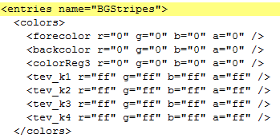
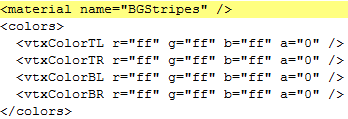
Step 5: When done modifying the XMLYT file, hit Ctrl-S on the keyboard to save the file. Go to the folder that contains Benzin, and run the CMD Script, CONTROLLERINFORMATION_BRLYT_CONVERT.CMD. Then open UltimateU8.
Step 6: Click Open in UltimateU8. Locate the controllerInformation.arc file in NewerSMBW/Others and open it. Delete the file controllerInformation_07.brlyt by Right-Clicking and click “Delete” in UltimateU8. Then Right-Click on the blyt folder in the ARC File, click Add File. Locate and choose the Newly-Modified controllerInformation_07.brlyt file.
Step 7: Click Save in UltimateU8 and then exit. Then Test and Improve! Then it should show something like this (This is the Example we used in Step 4):
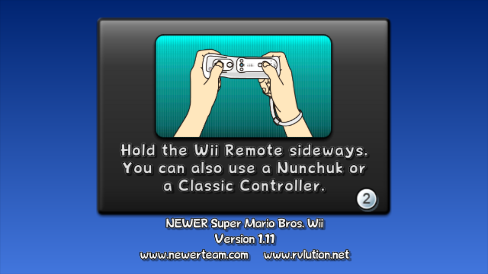
Requirements
-NewerSMBW
-A Windows PC.
-U8 Archive Opener
-An XML editor
-The file, controllerInformation.arc file in the /Others folder in Newer.
-A USB or SD Device to launch Newer
-Riivolution and Wii or Wii U
Tutorial
NOTE: This is for changing the Blue-ish part of the “Hold the WiiMote sideways” screen in newer,
For the tutorial on how to do the stripey part of the BG, look at the spoiler tag that tells you how to change the stripey part of the BG.
Step 1: Get a U8 Archive opener, I recommend UltimateU8 from the Wii.cs tools. The download link for it is here: http://code.google.com/p/showmiiwads/downloads/detail?name=Wii.cs%20Tools%200.3.rar. And extract the RAR Archive into one folder. After that Open UltimateU8. Open the controllerInformation.arc file in NewerSMBW/Others. Then extract the file controllerInformation_07.brlyt in the ARC File wherever you want.
Step 2: Download the XMLYT Converter (which is Benzin), (the download for it is at the bottom of the thread) and extract it into one folder. Drag the controllerInformation_07.brlyt file in the Benzin folder. Now you’ll have to convert it into XMLYT format. Run the CMD script named, CONTROLLERINFORMATION_XMLYT_CONVERT.CMD.
Step 3: Get a XML Editor, I recommend PSPad. Download PSPad here and extract it into one folder. Open the XMLYT file with PSPad. Find these lines in the XMLYT:
Step 4: Mess around w/ the RGBA Values/etc. (the numbers next to the r=" ,g=" , b=" , a=" text in the XMLYT are the RGBA Color Values) to get the color that you want. For an example we’ll put RGBA Values to Zero to have a black background. After modifiying the file, it should look something like this:
Step 5: When done modifying the file, hit Ctrl-S on the keyboard to save the file. Go to the folder that contains Benzin, and run the CMD Script, CONTROLLERINFORMATION_BRLYT_CONVERT.CMD. Then open UltimateU8.
Step 6: Click Open in UltimateU8. Locate the controllerInformation.arc file in NewerSMBW/Others and open it. Delete the file controllerInformation_07.brlyt by Right-Clicking and click “Delete” in UltimateU8. Then Right-Click on the blyt folder in the ARC File, click Add File. Locate and choose the Newly-Modified controllerInformation_07.brlyt file.
Step 7: Click Save in UltimateU8 and then exit. Then Test and Improve! Then it should show something like this (This is the Example we used in Step 4):
Unfortunately, I don’t know how to insert a custom picture and replace the blue-ish part of the BG.
Probably you’ll need to do some BRLYT editing/etc. to do that. Which could be VERY hard to do.
Requirements
-NewerSMBW
-A Windows PC.
-U8 Archive Opener that can replace texture images in a U8 Archive (e.g. BrawlBox, SZS Modifier, CTools, etc.)
-An Image editor that can edit PNG Image files (e.g. Photoshop, RealWorld Paint, etc.)
-The file, controllerInformation.arc file in the /Others folder in Newer.
-A USB or SD Device to launch Newer
-Riivolution and Wii or Wii U
Tutorial
Step 1: Download a U8 Archive Opener that can replace texture images in a U8 Archive, I’d recommend SZS Modifier, since it can replace textures instantly. Download it here.
Step 2: Open NewerSMBW/Others/controllerInformation.arc w/ SZS Modifier. Open the timg folder in the ARC File. Then you should see these TPL texture images:
The TPLs in the picture above Refers to different images.
Step 3: Choose a TPL texture image file, for an example we’ll do the light blue BG (which is CIT_Left.tpl, CIT_Right.tpl, CIT_Middle.tpl).
These pictures here shows which TPL Images refer to which image of the “Hold the WiiMote Sideways” screen:
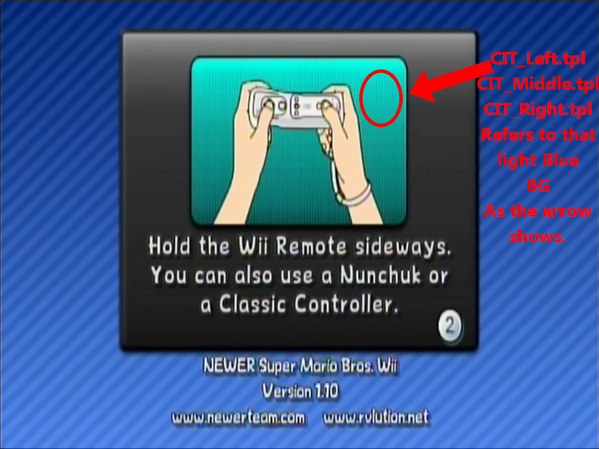
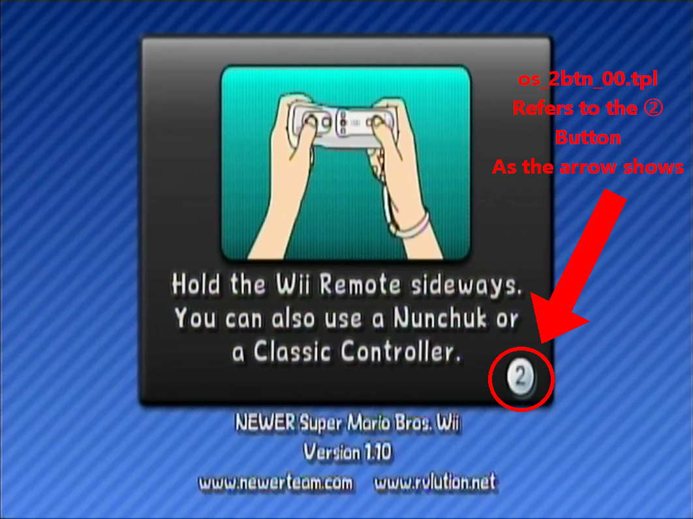
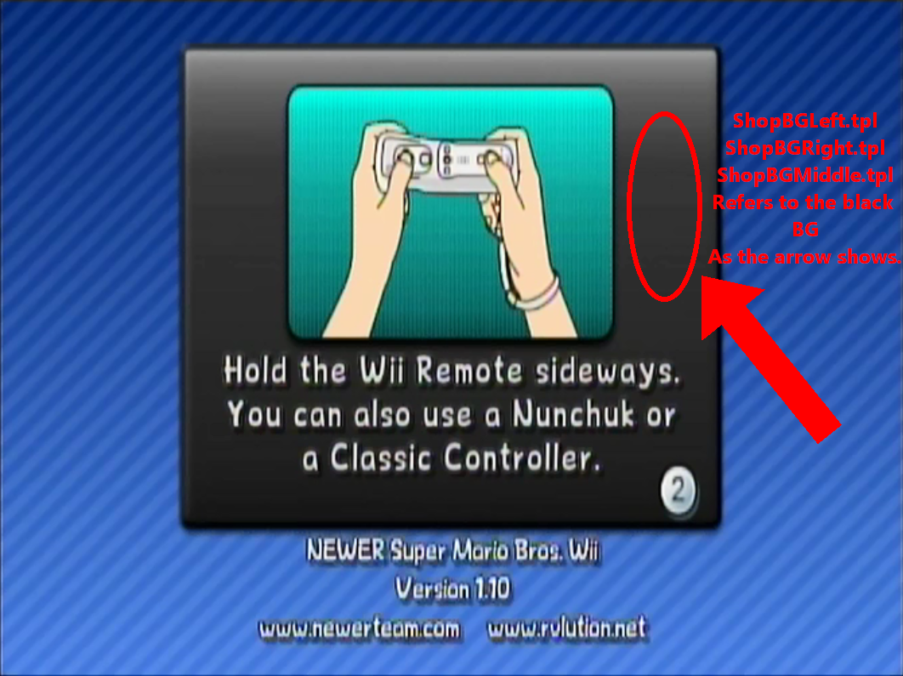
Step 4: Double-Click on the image preview box. Then it’ll give you the Texture Edit Window:
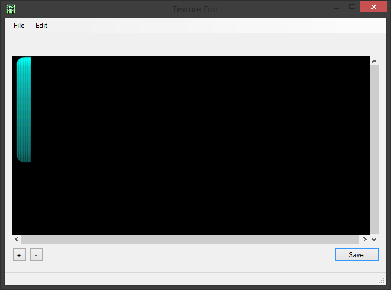
Step 5: Click, File --> Export in the texture edit window.
Give the exported image a name. Then save it somewhere in your computer. Now Edit them with a paint editor. I recommend RealWorld Paint from the RealWorld Graphics Website. Download RWPaint here. And follow the install instructions.
Step 6: Run RealWorld Paint, and open the texture file you exported using SZS Modifier using RealWorld Paint. Modify them using RWPaint, for an example we’ll do a colorize on the texture.
Step 7: Once done modifying the texture image, hit Ctrl-S on the keyboard to save the texture image.
Step 8: Click, File --> Import. Locate the texture you modified and click on it. After clicking File --> Import in the Texture edit window/etc., it should look like something like this:
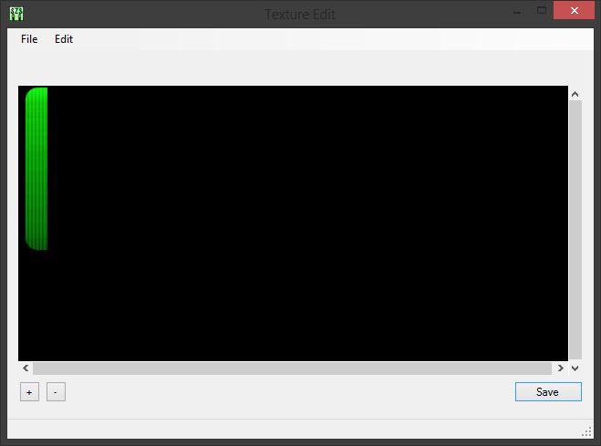
Then click Save in the Texture Edit Window.
Step 9: Hit Ctrl-S on your Keyboard in SZS Modifier and wait for it to save the file.
Step 10: Once your done, test and improve! Now it should look like something like this (this is the example we used in Step 4 when editing the texture image):
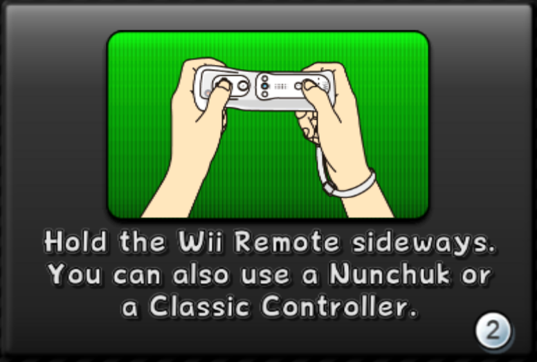
Requirements
-NewerSMBW
-A Windows PC.
-A USB or SD Device to launch Newer.
-The file sequenceBG.arc in the /Others folder in the NewerSMBW.
-An XML Editor (such as PSPad).
-A BRLYT to XMLYT converter (such as Benzin).
-Riivolution and Wii or Wii U
-U8 Archive Opener that can extract files from an U8 archive (such as the Wii.cs Tools, BrawlBox, etc).
Tutorial
This step is for changing the Blue File Select Screen BG (the BG at the back of the buttons/etc on the file select screen):
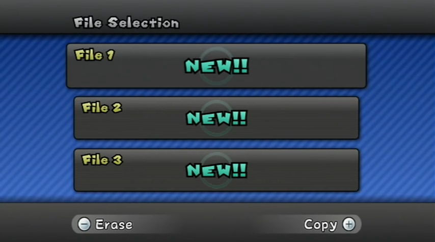
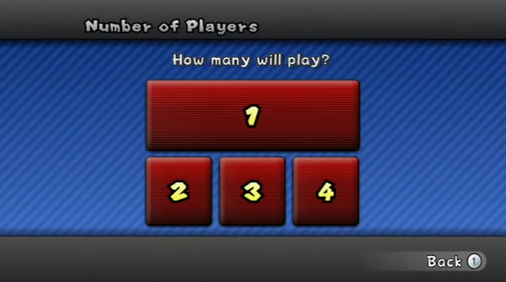
Step 1: Get the NewerSMBW Package at Newer Team’s Website. And follow the instructions on installing it.
Step 2: Download a U8 Archive Opener that can extract files from an U8 Archive I’d suggest getting UltimateU8 from the Wii.cs Tools as it’s free and simple, download it here.
Step 3: Download the XMLYT Converter (which is Benzin), (the download for it is at the bottom of the thread) and extract it into one folder.
Step 3b: Open the sequenceBG.arc file in UltimateU8 (by clicking Open and locating the file). Right-click on file sequenceBG_00.brlyt and click Extract File then put it in the folder where you put the benzin package there. (also ignore the CONTROLLERINFORMATION_XMLYT_CONVERT.CMD and the CONTROLLERINFORMATION_BRLYT_CONVERT.CMD files as they are not needed in this tutorial in this spoiler tag).
Step 4: Open up the Windows Command prompt (by going to C:\WINDOWS\SYSTEM32\ in the Windows File Explorer and clicking on the cmd.exe file). After you double-clicked on the cmd.exe file, Switch to the directory where you extracted benzin. By doing this:
cd <DIRECTORYNAME>
Replace the <DIRECTORYNAME> stuff w/ the folder path where you put the benzin in. For example if you put the folder in your desktop, you may do something like this:
cd C:\Users\%USERNAME%\Desktop\Benzin\
Then type the command to convert the BRLYT to XMLYT:
benzin r sequenceBG_00.brlyt sequenceBG_00.xmlyt
Step 5: Get an XML editor, I’d suggest using PSPad, as it’s free and simple, get it here. However if you have an XML editor already on your computer, you may use that one on your computer instead of getting this one.
Step 6: Open the XMLYT in PSPad, search for these lines:
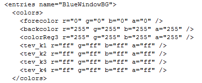
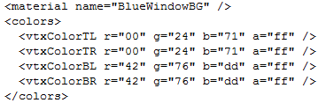
Step 7: Mess around w/ the RGBA Values/etc. (the numbers next to the r=" ,g=" , b=" , a=" text in the XMLYT are the RGBA Color Values) to get the color that you want. For an example we’ll put RGBA Values to Zero to have a clear-colored background. After modifiying the file, it should look something like this:
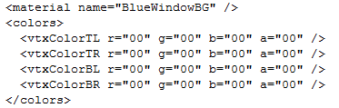
Step 8: As Said from Step 4: Open up the Windows Command prompt (by going to C:\WINDOWS\SYSTEM32\ in the Windows File Explorer and clicking on the cmd.exe file). After you double-clicked on the cmd.exe file, Switch to the directory where you extracted benzin. By doing this:
cd <DIRECTORYNAME>
Replace the <DIRECTORYNAME> stuff w/ the folder path where you put the benzin in. For example if you put the folder in your desktop, you may do something like this:
cd C:\Users\%USERNAME%\Desktop\Benzin\
Step 8b: Type the command to convert the XMLYT to BRLYT:
benzin m sequenceBG_00.xmlyt sequenceBG_00.brlyt
Step 9: Go to the Open the file sequenceBG.arc w/ UltimateU8 and right-click on the sequenceBG_00.brlyt file and click Delete then right-click on the blyt folder and click Add File and choose the newly-modified BRLYT file (which is in the folder where Benzin is) and hit Save then exit out of UltimateU8. Then test and improve! Here’s the example of changing the file select screen Blue BG to a black BG (as we did in Step 7):
For altering the stripes BG/etc. (that’s in the background of the NSMBWii Original File Select Screen BG), look at the tutorial on altering the stripes part of the BG. Which is next after this tutorial.
Step 9b: (THIS IS OPTIONAL) However, you might now replace the original NSMBWii BG Textures shown in the picture above this text (the BG textures are located in the sequenceBGTexture.arc file). To modify the textures of the sequenceBGTexture.arc file, get the sequenceBGTexture.arc file from your NSMBWii Game and get a U8 Archive editor that can edit TPL images (such as SZS Modifier, BrawlBox, CTools, etc) and extract the TPLs and convert them to PNG and edit them in RealWorld Paint, Adobe Photoshop, or any paint editor you’d like. Then convert those PNG images you edited and convert them to TPL, and replace the TPL Images of the sequenceBGTexture.arc file w/ the TPL images you created and Save the file and put the “newly-modified” sequenceBGTexture.arc file in the /Others/ folder of the NewerSMBW folder on your SD or USB Device and test them and improve.
This is for Changing the Stripes Part of the Blue BG of the file Select Screen.
Requirements
-NewerSMBW
-A Windows PC.
-A USB or SD Device to launch Newer.
-A BRLYT to XMLYT converter (such as Benzin).
-The file sequenceBG.arc in the /Others folder in the NewerSMBW.
-An XML Editor (such as PSPad).
-Riivolution and Wii or Wii U
-U8 Archive Opener that can extract files from an U8 archive (such as the Wii.cs Tools, BrawlBox, etc).
Tutorial
Step 1: Get the Newer SMBW Package at Newer Team’s Website. And follow the instructions on installing it.
Step 2: Download a U8 Archive Opener that can extract files from an U8 Archive I’d suggest getting UltimateU8 from the Wii.cs Tools as it’s free and simple, download it here.
Step 3: Download the XMLYT Converter (which is Benzin), (the download for it is at the bottom of the thread) and extract it into one folder.
Step 3b: Open the sequenceBG.arc file in UltimateU8 (by clicking Open and locating the file). Right-click on file sequenceBG_00.brlyt and click Extract File then put it in the folder where you put the benzin package there. (also ignore the CONTROLLERINFORMATION_XMLYT_CONVERT.CMD and the CONTROLLERINFORMATION_BRLYT_CONVERT.CMD files as they are not needed in this tutorial in this spoiler tag).
Step 4: Open up the Windows Command prompt (by going to C:\WINDOWS\SYSTEM32\ in the Windows File Explorer and clicking on the cmd.exe file). After you double-clicked on the cmd.exe file, Switch to the directory where you extracted benzin. By doing this:
cd <DIRECTORYNAME>
Replace the <DIRECTORYNAME> stuff w/ the folder path where you put the benzin in. For example if you put the folder in your desktop, you may do something like this:
cd C:\Users\%USERNAME%\Desktop\Benzin\
Then type the command to convert the BRLYT to XMLYT:
benzin r sequenceBG_00.brlyt sequenceBG_00.xmlyt
Step 5: Get an XML editor, I’d suggest using PSPad, as it’s free and simple, get it here. However if you have an XML editor already on your computer, you may use that one on your computer instead of getting this one.
Step 6: Open the XMLYT in PSPad, search for this line:
Step 7: Mess around w/ the RGBA Values/etc. (the numbers next to the r=" ,g=" , b=" , a=" text in the XMLYT are the RGBA Color Values) to get the color that you want. For an example we’ll put RGBA Values to Zero to have no stripes in the background. After modifiying the file, it should look something like this:
Step 8: As Said from Step 4: Open up the Windows Command prompt (by going to C:\WINDOWS\SYSTEM32\ in the Windows File Explorer and clicking on the cmd.exe file). After you double-clicked on the cmd.exe file, Switch to the directory where you extracted benzin. By doing this:
cd <DIRECTORYNAME>
Replace the <DIRECTORYNAME> stuff w/ the folder path where you put the benzin in. For example if you put the folder in your desktop, you may do something like this:
cd C:\Users\%USERNAME%\Desktop\Benzin\
Step 8b: Type the command to convert the XMLYT to BRLYT:
benzin m sequenceBG_00.xmlyt sequenceBG_00.brlyt
Step 9: Go to the Open the file sequenceBG.arc w/ UltimateU8 and right-click on the sequenceBG_00.brlyt file and click Delete then right-click on the blyt folder and click Add File and choose the newly-modified BRLYT file (which is in the folder where Benzin is) and hit Save then exit out of UltimateU8. Then test and improve! Here’s the example of removing the file select screen Stripes Part of the BG (as we did in Step 7):
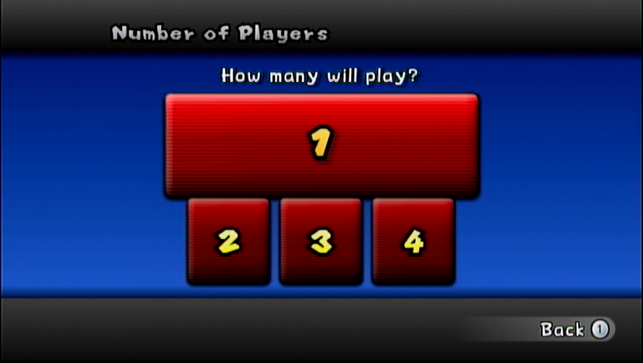
Notice that in the Blue BG at the back of the buttons, etc. does not have any stripes in it.
So far I’ve accomplished to edit the texture images of the red buttons on the file select screen shown below:
Requirements
-NewerSMBW
-A Windows PC.
-U8 Archive Opener that can replace texture images in a U8 Archive (e.g. BrawlBox, SZS Modifier, CTools, etc.)
-An Image editor that can edit PNG Image files (e.g. Photoshop, RealWorld Paint, etc.)
-The file, fileSelectPlayer.arc file in the /Others folder in Newer.
-A USB or SD Device to launch Newer
-Riivolution and Wii or Wii U
Tutorial
Step 1: Download a U8 Archive Opener that can replace texture images in a U8 Archive, I’d recommend SZS Modifier, since it can replace textures instantly. Download it here. And follow the instructions of installing it.
Step 2: Open NewerSMBW/Others/fileSelectPlayer.arc w/ SZS Modifier. Open the timg folder in the ARC File. Then you should see these TPL texture images:
The TPLs in the picture above Refers to different images.
Step 3: Choose a TPL texture image file, for an example we’ll do the red Button Textures (which is TPL images: FSP_ButtonRight.tpl, FSP_ButtonLeft.tpl, FSP_ButtonMiddle.tpl). The Table shown below contains the information of which TPL contains which part of the file select screen:
TPL Texture image in fileSelectPlayer.arc
Where the TPL Image refers to on the File Select Screen
FSP_ButtonLeft.tpl
The leftmost part of the red player scene buttons of file select screen.
FSP_ButtonRight.tpl
The rightmost part of the red player scene buttons of file select screen.
FSP_ButtonMiddle.tpl
The middlemost part of the red player scene buttons of file select screen.
im_base_00.tpl
The backdrop texture of the red buttons on the file select screen (or maybe something else or not only that?).
im_graButton_Shine_350_120_00.tpl
UNKNOWN
im_graButton_Shine_110_120_00.tpl
UNKNOWN
im_miniWindow_32_120_R_00.tpl
UNKNOWN
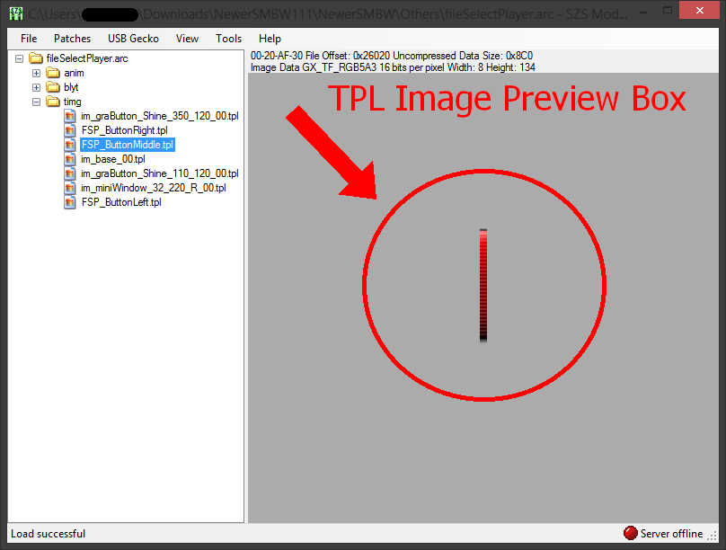
Step 4: Double-Click on the image preview box. Then it’ll give you the Texture Edit Window:
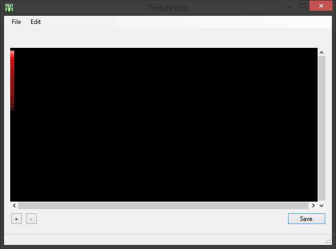
Step 5: Click, File --> Export in the texture edit window.
Give the exported PNG image a name. Then save it somewhere in your computer. Now Edit them with a paint editor. I recommend RealWorld Paint from the RealWorld Graphics Website as it is free and simple. Download RWPaint here. And follow the install instructions.
Step 6: Run RealWorld Paint, and open the PNG texture file you exported using SZS Modifier using RealWorld Paint. Modify them using RWPaint, for an example we’ll do a colorize in yellow on the texture.
Step 7: Once done modifying the PNG texture image in the paint editor, hit Ctrl-S on the keyboard to save the texture image.
Step 8: On the SZS Modifier texture edit window, Click, File --> Import. Locate the texture you modified and click on it. After clicking File --> Import in the Texture edit window/etc., it should look like something like this:
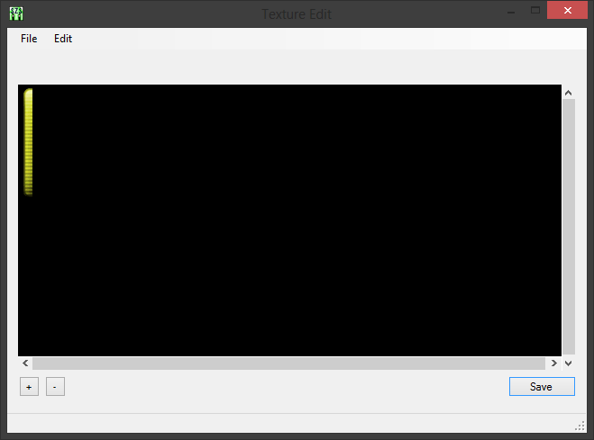
Step 9: Hit Ctrl-S on your Keyboard in SZS Modifier and wait for it to save the file.
Step 10: Once your done, test and improve! Now it should look like something like this (this is the example we used in Step 6 when editing the texture image):
Notice that the buttons there are yellow now.
This is for editing the level screenshots photo as shown in the Pre Game of any level selected on any world map:
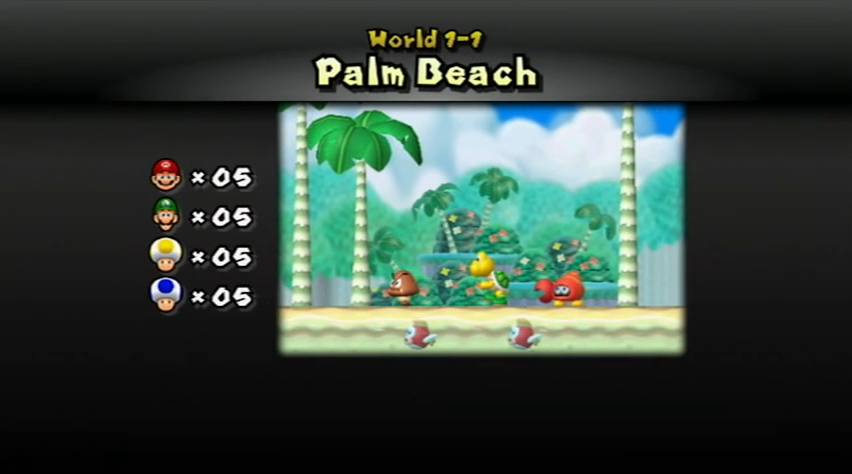
Step 1: Download an editor that can convert Image files to TPL. I’d suggest using TPLMii from the Wii.cs Tools, as it is fast and simple. Download it here And follow the install instructions.
Step 1b: Have your PNG Image that you wish to use ready for this tutorial (you can also use a JPG, GIF, BMP image if you like, but a PNG image is recommended for usage w/ TPLMii) The PNG Image MUST be 398x242 pixels, otherwise the game may crash or errors can occur—You can Shrink your image to 398x242 pixels if your Image is Big or too Small w/ your Image editor you use.
If the Image you’re using is in a different format such as TIFF, TGA, etc. and is not in JPG, GIF, BMP or PNG, you’ll need to go and export your image as PNG (or JPG, GIF, BMP) w/ your Paint Editor. NOTE: For some paint editors, when you Export your Image to the JPG format, the program might use a .jpeg extension instead of .jpg. If that happens when exporting your image, change the file extension, .jpeg to .jpg.
Step 2: Open the TPLMii.exe file. And you should get the window. And next to the “Image” Box of the Program, click the “..” (ellipsis) button. Choose your JPG or GIF or BMP or PNG image. Switch the TPL Image format to RGB5A3 (Low Quality) as all of the Newer Level Screenshot TPL images are all encoded in RGB5A3. DO NOT CHOOSE OTHER ENCODINGS THAN THAT, OTHERWISE THE GAME MAY CRASH OR OTHER ERRORS MAY OCCUR!
Step 3: Click the Convert button on the Program. And it should say, “Successfully converted to Tpl.” Once you click it. Then Locate the TPL Image (TPLMii would usually put it into the location where the “selected” TPL for conversion is).
Step 4: Rename the TPL Image to the ID for the specific Level (for example, if you wish to have your TPL be the Pre Game screenshot of W1-01, you’d rename it to 01-01.tpl). And put it into the LevelSamples Folder of the NewerSMBW folder.
Step 5: Test it to see if it works. Here’s my modification of the level 01-01 pre game screenshot:
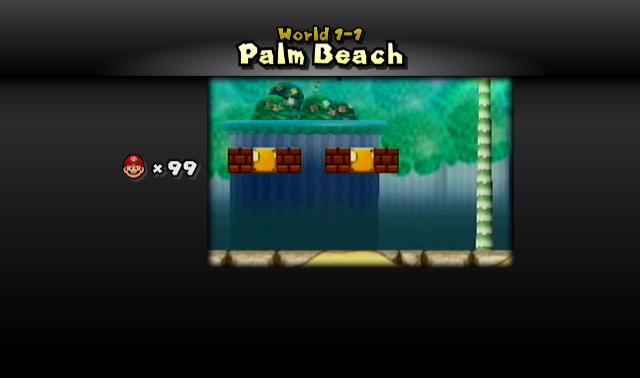
This is for changing the pause menu here:
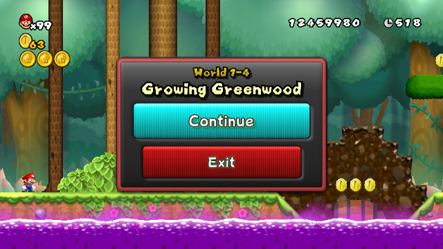
Step 1: If you don’t have the NewerSMBW package already, Get the NewerSMBW Package here at The Newer Team’s Website. And Follow the instructions on the site on installing Newer.
Step 2: Download a U8 Archive Opener that can replace texture images in a U8 Archive, I’d recommend SZS Modifier, since it can replace textures instantly. Download it here. And follow the instructions of installing it.
Step 3: Open NewerSMBW/Others/pauseMenu.arc w/ SZS Modifier. Open the timg folder in the ARC File. Then you should see these TPL texture images:
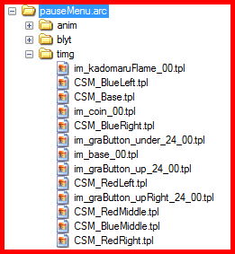
The TPLs in the picture above Refers to different images.
Step 4: Choose a TPL texture image file, for an example we’ll do the red/blue Button Textures and the (that is the TPL images: CSM_BlueRight.tpl, CSM_BlueLeft.tpl, CSM_BlueMiddle.tpl), CSM_RedRight.tpl, CSM_RedLeft.tpl, CSM_RedMiddle.tpl). The Table shown below contains the information of which TPL contains which part of the file select screen:
TPL Texture image in pauseMenu.arc
Where the TPL Image refers to on the Pause Screen
im_kadomaruFlame_00.tpl
UNKNOWN
CSM_BlueLeft.tpl
The leftmost part of the Continue button.
CSM_Base.tpl
The background texture of the window. However all colors of the custom textures I did for modification of that image all appears as gray when I use the image for the TPL as the TPL Image is encoded in the IA8 format. The IA8 format only accepts a gray color and no other colors as known.
im_coin_00.tpl
The coin that appears when you pause the game in a Coin Battle Stage, Unused in Newer as the Coin Battle Scene isn't in Newer.
CSM_BlueRight.tpl
The rightmost part of the Continue button.
im_graButton_under_24_00.tpl
UNKNOWN
im_base_00.tpl
The base of the Pause Menu Screen.
im_graButton_up_24_00.tpl
UNKNOWN
CSM_RedLeft.tpl
The leftmost part of the Exit Button.
im_graButton_upRight_24_00.tpl
UNKNOWN
CSM_RedMiddle.tpl
The middlemost part of the Exit Button.
CSM_BlueMiddle.tpl
The middlemost part of the Continue button.
CSM_RedRight.tpl
The rightmost part of the Exit Button.
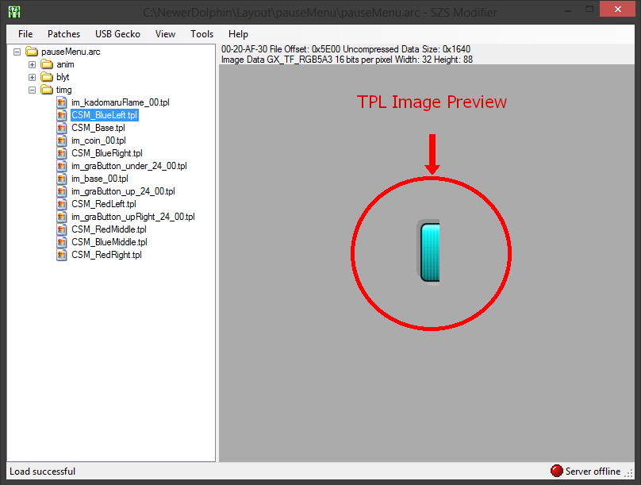
Step 5: Double-Click on the image preview box. Then it’ll give you the Texture Edit Window:
Step 6: Click, File --> Export in the texture edit window.
Give the exported image a name. Then save it somewhere in your computer. Now Edit them with a paint editor. I recommend RealWorld Paint from the RealWorld Graphics Website. Download RWPaint here. And follow the install instructions.
Step 6b: Run RealWorld Paint, and open the texture file you exported using SZS Modifier using RealWorld Paint. Modify them using RWPaint, for an example we’ll do a colorize in orange on the texture.
Step 7: In the paint editor, Once done modifying the texture image in the paint editor, hit Ctrl-S on the keyboard to save the texture image.
Step 7b: Click, File --> Import. Locate the texture you modified and click on it. After clicking File --> Import in the Texture edit window/etc., it should look like something like this:
Then click Save in the Texture Edit Window.
Step 8: Hit Ctrl-S on your Keyboard in SZS Modifier and wait for it to save the file.
Step 9: Once your done, test and improve! Now it should look like something like this (this is the example we used in Step 6 when editing the texture image):
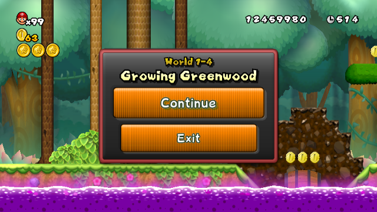
Tutorial on changing the CANCEL and OK! Buttons of the Pause menu (the buttons that appear when you click the EXIT Button on the Pause Menu).
NOTE: This also edits the Yes and No Buttons, when clicking Save or Title Screen buttons on the menu (when hit the + button on the wii remote in Newer while you’re in a world) and possibly other Yes and No messages.
Step 1: If you don’t have the NewerSMBW package already, Get the NewerSMBW Package here at The Newer Team’s Website. And Follow the instructions on the site on installing Newer.
Step 2: Download a U8 Archive Opener that can replace texture images in a U8 Archive, I’d recommend SZS Modifier, since it can replace textures instantly. Download it here. And follow the instructions of installing it.
Step 3: Open NewerSMBW/Others/yesnoWindow.arc w/ SZS Modifier. Open the timg folder in the ARC File. Then you should see these TPL texture images:
The TPLs in the picture above Refers to different images.
Step 4: Choose a TPL texture image file, for an example we’ll do the Button Textures and the Window Textures (Window Textures: YN_WindowXXX [where XXX is Middle, Left, or Right], Button Textures: YN_ButtonXXX [where XXX is Middle, Left, or Right]). The Table shown below contains the information of which TPL contains which part of the window:
TPL Texture image in yesNoWindow.arc
Where the TPL Image refers to on the CANCEL and OK! buttons dialog
YN_WindowMiddle.tpl
The Middlemost of the Window.
YN_WindowLeft.tpl
The Leftmost of the Window.
YN_ButtonMiddle.tpl
The Middlemost of the Buttons on the Window.
YN_ButtonLeft.tpl
The Leftmost of the Buttons on the Window.
YN_ButtonRight.tpl
The Rightmost of the Buttons on the Window.
YN_WindowRight.tpl
The Rightmost of the Window.
im_base_00.tpl
The Base Image of the Window.
os_baloon_00.tpl
The Mario-style Balloon that appears on a file. It always appears on every File Saved w/ Quick Save.
Unused in Newer as Newer Doesn't use Quick Save to Save Game Files.
Step 5: Double-Click on the image preview box. Then it’ll give you the Texture Edit Window:
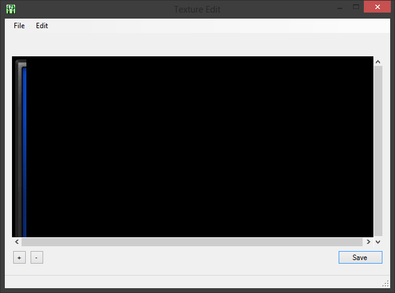
Step 6: Click, File --> Export in the texture edit window.
Give the exported image a name. Then save it somewhere in your computer. Now Edit them with a paint editor. I recommend RealWorld Paint from the RealWorld Graphics Website. Download RWPaint here. And follow the install instructions.
Step 6b: Run RealWorld Paint, and open the texture file you exported using SZS Modifier using RealWorld Paint. Modify them using RWPaint, for an example we’ll do a colorize in “gold” on the texture (of the window textures of course!). For the buttons, we’ll do a colorize in orange for the example.
Step 7: In the paint editor, Once done modifying the texture image in the paint editor, hit Ctrl-S on the keyboard to save the texture image.
Step 7b: Click, File --> Import. Locate the texture you modified and click on it. After clicking File --> Import in the Texture edit window/etc., it should look like something like this:
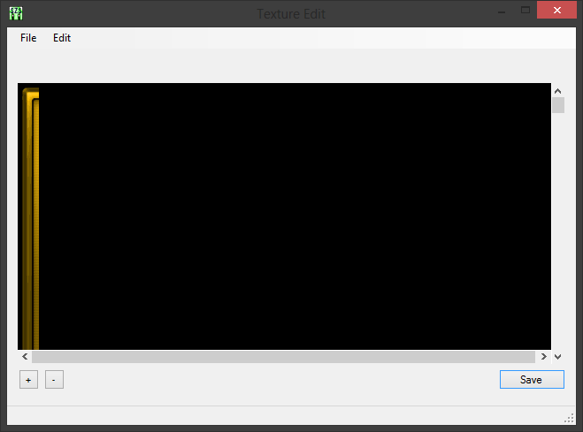
Step 8: Hit Ctrl-S on your Keyboard in SZS Modifier and wait for it to save the file.
Step 9: Once you’re done, test and improve! Now it should look like something like this (this is the example we used in Step 6 when editing the texture image): NOTE: The Buttons may look SLIGHTLY different when you did the tutorial. Since I wanted to resize the textures for the buttons for a weird-looking buttons It appears different (as SZS modifier shrinks the image to the specified Dimensions of the TPL image.
Step 1: Decompress the .LH file /NewerSMBW/Layouts/msgbox.arc.LH. You can do it with NTCompress from the RVL SDK, note that it is illegal to do, So if you are worried/etc., a legal way to do it is to choose ZementBlocks’s NewerDecompressed Package on his Google Drive..
Step 2: Open the decompressed msgbox.arc file with SZS Modifier open up the timg folder and edit the box.tpl and button.tpl textures, I will not put up a table documentation of the textures, as they’re simple (as the names of the TPLs correspond to the object name in the message box).
Step 3: Click on the Image Preview box and click File --> Export. Export the Texture. Give the exported image a name. Then save it somewhere in your computer. Now Edit them with a paint editor. I recommend RealWorld Paint from the RealWorld Graphics Website. Download RWPaint here. And follow the install instructions.
Step 4: Run RealWorld Paint, and open the texture files you exported using SZS Modifier using RealWorld Paint. Modify them using RWPaint, for an example we’ll do a colorize in gold on the message box texture (for the ② button texture we’ll do a colorize in green).
Step 5: Once done modifying the PNG texture image in the paint editor, hit Ctrl-S on the keyboard to save the texture image.
Step 6: On the SZS Modifier texture edit window, Click, File --> Import. Locate the texture you modified and click on it.
Step 7: Hit Ctrl-S on your Keyboard in SZS Modifier and wait for it to save the file.
Step 8: Once your done, go to any level that has a speaker box block, hit it and you should see the message box and your modifications should be there! Then test and improve! The Example you did in the tutorial should make the message box look like this:
Step 1: For editing the course names, Get RoadrunnerWMC’s Level Info Editor. And Follow the install instructions.
Step 2: Open the LevelInfo.bin file in the NewerSMBW/NewerRes folder, w/ RoadrunnerWMC’s level info tool, and edit the course names or world ID numbers as you wish.
Step 3: Save the LevelInfo.bin file w/ the tool, and test the stuff in NewerSMBW and it should work if not good/etc., then improve.
Requirements
-NewerSMBW
-A Windows PC.
-A USB or SD Device to launch Newer
-Riivolution and Wii or Wii U
Tutorial This is for changing the ‘world’ text as shown in the pictures here:
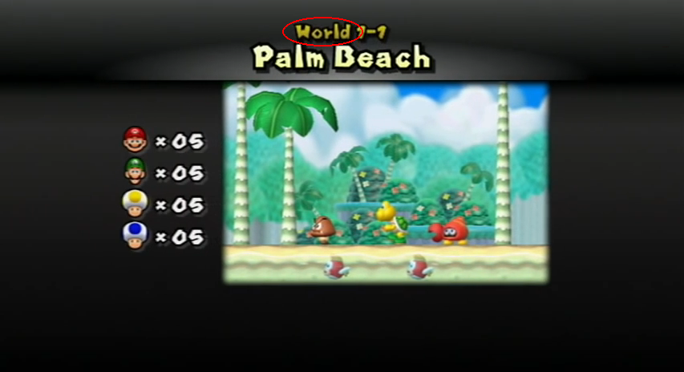 This does not require any BRLYT editing AFAIK.
Step 1: If you don’t have the NewerSMBW package already, Get the NewerSMBW Package here at The Newer Team’s Website. And Follow the instructions on the site on installing Newer.
Step 2: Get a Hex Editor. I would recommend PSPad, since it is 100% free and simple. Download it here. And extract the ZIP archive into one folder.
Step 3: Look into the folder, /NewerSMBW/NewerRes/ in your SD or USB Device. And Open all the DLCode files w/ PSPad.
Step 4: Hit Ctrl-F on your keyboard in PSPad. A window should appear. Check the As Text box in the window. Search for the text “TF_IA8” (without quotes). And some bytes after that text you should see this (focus on the text that are highlighted):
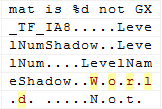
Step 5: And edit those text w/ A text w/ as least 5 characters or less (e.g. “Land”).
Also, BTW, You should replace the characters that are not needed in the message w/ Space(s).
And as I’m saying right now, this must be done IN ALL of the DLCode files including, US_1, US_2, JP_1, JP_2, EU_1, EU_2). For an example, we’ll use the text “Land” (without quotes). Once you’re done w/ the modifications, it should look like this:
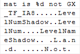
Step 6: Save all of the DLCode files and Eject your USB or SD Device and go and insert it into your Wii Now Go Select a Course in any world of the Newer Game. And test your modifications on your Wii, it should look like something like this in the Pause Menu and the Pre Game Screen shown below:
For Putting Longer text in the “World” message, you can download the newer sources and find the source file that contains the “World” message and put your longer text into it and compile the newer sources. But the reason why I didn’t post a tutorial of changing it via the Newer Sources/etc., because It somehow doesn’t work on a real wii/wii u console [as for most people] (it has crashed on a real wii/wii u for Treeki’s and megazig’s Release of the newer sources, as I tested them on my wii and wii u).
Step 2: Open the Messages.bin file in the NewerSMBW/NewerRes folder, w/ RoadrunnerWMC’s messages editor tool, and edit the ID with message box titles/text contents/etc. For example I’m gonna edit the message box where it says something about the raccoon leaf (or the tanooki leaf) which is message ID 30 which is in the Yoshi House level [when you enter the blue pipe in the level] in World 1
Original:
My Message Edits:
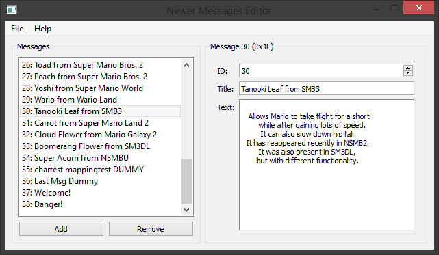
Step 3: Save the Messages.bin file. Go to the level that has the speaker box sprite (that is for the message box you edited). Hit it by jumping under it and you should see your message edit. Here is the test of my Message edit:
NOTE: When using the Custom Message Box sprite in a custom level in NewerSMBW in Reggie!, if you wish to use a message box ID, you must add a value of 256 to the ID retrieved from the Newer Messages Editor (e.g. if you wish to use an ID of 30, the value must be 286 {which is 30+256}).
Now, most of you guys who played NewerSMBW did see NewerSMBW's Course Clear Message Hack (when you touch the flagpole in a level). Now I’m gonna Show you how to change it.
Step 1. You need to have a U8 Archive modifier. I would Recommend The Wii.cs Tools, since it is free and simple. Download the Wii.cs tools here: http://code.google.com/p/showmiiwads/downloads/detail?name=Wii.cs%20Tools%200.3.rar&. And extract the zip file it into one folder. Now you’ll need the corseClear.arc file from NSMBWii, which is located at /US/EngUS/Layout/corseClear/ or /EU/EngEU/Layout/corseClear/ . The File may be at a different location, depending on your NSMBWii Disc Region (or language?).
-For NewerSMBW, it is located at /NewerSMBW/Layouts/corseClear.arc (notice that it is in .LH compression, so you’ll need to decompress it with NTCompress from the Nintendo RVL SDK, but it is illegal to do. So for a legal way to do it, you should choose ZementBlock’s NewerDecompressed Package on his Google Drive.).
Step 2: Open UltimateU8 and locate and Open your corseClear.arc. After that, extract the Course Clear BRLYT File from corseClear.arc:
NOTE: For NewerSMBW, the file to extract in the corseClear.arc file is corseClear_EngEU_00.brlyt.
Step 3: You’ll need a hex editor to edit the file. I would recommend PSPad Hex editor to edit the BRLYT file, since it’s free and simple. Download PSPad here. And extract it into one folder.
Step 4: (BACKUP YOUR CORSECLEAR BRLYT FIRST BEFORE EDITING!) Open PSPad and in PSPad, click ‘File’ then ‘Open’. Then choose your Course Clear BRLYT. Now find these lines in the BRLYT:
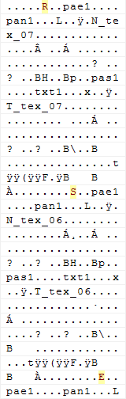
After the
E..pae1
Line in the BRLYT, these lines should appear next:
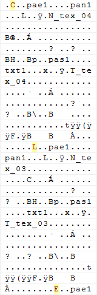 NOTE: EDIT THE HIGHLIGHTED TEXT IN THE BRLYT, DO NOT EDIT THE ONE THAT ARE NOT HIGHLIGHTED! AND YOU MAY ONLY PUT ONE CHARACTER WHEN EDITING THE HIGHLIGHTED TEXT IN THE PICTURES ABOVE.
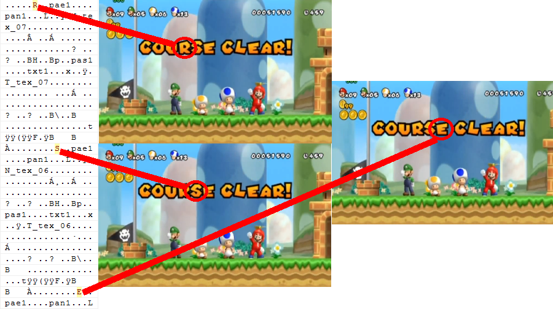
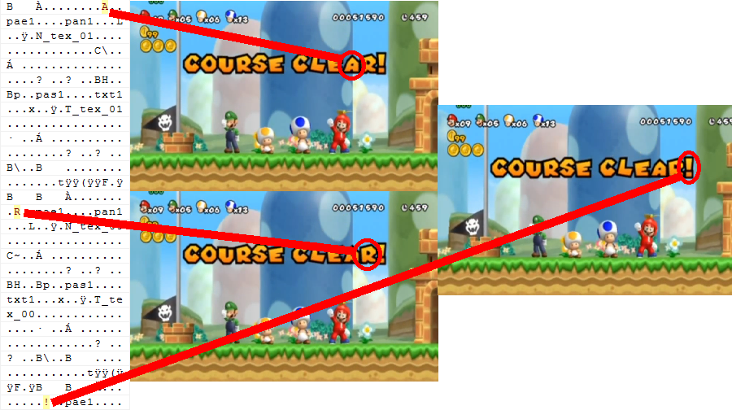
NOTE: A C . . pae1 is found first in the Newer Course Clear BRLYT, but it is not mentioned here, as it is unused in NewerSMBW, probably the Newer Team commented out the lines in the BRLANs (which are in the /anim folder) in corseClear.arc which represent the C . . pae1. But I’m not exactly sure if they did that.
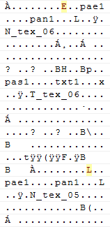
After the
L..pae1
Line in the BRLYT, these lines should appear next:
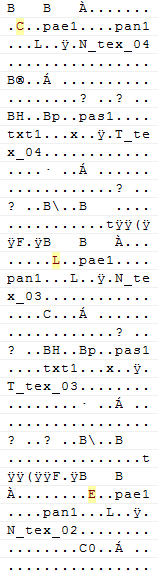
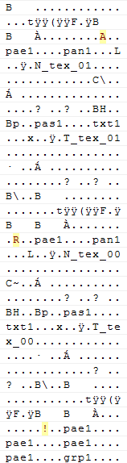 NOTE: EDIT THE HIGHLIGHTED TEXT IN THE BRLYT, DO NOT EDIT THE ONE THAT ARE NOT HIGHLIGHTED! AND YOU MAY ONLY PUT ONE CHARACTER WHEN EDITING THE HIGHLIGHTED TEXT IN THE PICTURES ABOVE.
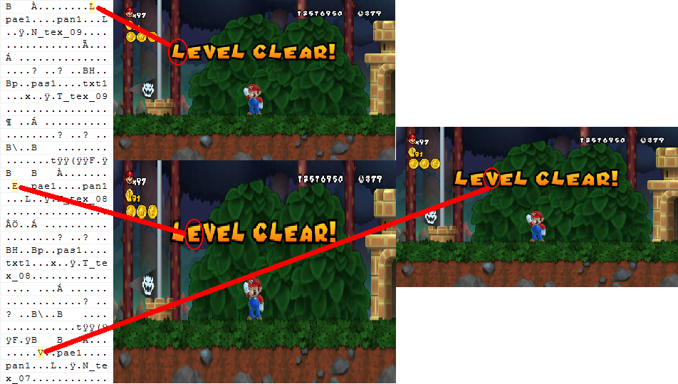
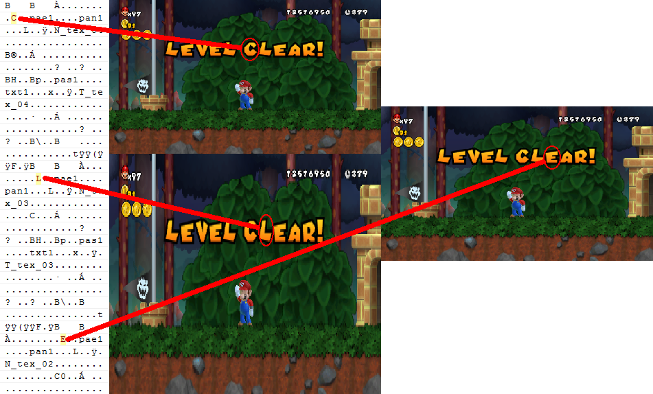
- (This “saying” doesn’t apply to Newer’s Course Clear Message) Now, the text shown in the Pictures may be different when you look into your Course Clear BRLYT, but It all depends on what Game Language is in the Course Clear BRLYT (or Region?). So for the French Language Version of the Course Clear BRLYT may have French language. And for the English Language Version of the Course Clear BRLYT may have English language. And for the Spanish Language Version of the BRLYT may have Spanish language, etc. Also, the length (or the number of characters) of the text may be longer than the ones shown in the picture depending on the Language of the Course Clear BRLYT. For the English version: there is only 12, for the Spanish: probably (but not sure) it is 15.
Obviously for Newer, it is 11 (if you exclude the unused C . . pae1 line). NOTE: Shorter messages (than the original ones of course) is possible, simply replace the strings that are isn’t needed with space(s).
Now edit the letters of the course clear message with your own Lines like, Well Done! or Great Job! or Something. For an example of the tutorial, we’ll change the Message to
TEST01 TEST02
For Newer’s Course Clear—the suggested message to change to:
EDIT1 EDIT2
Step 5: Once you’re done with editing the BRLYT, hit Ctrl-S on the keyboard to save it. The Open UltimateU8, then locate and open the corseClear.arc file. Once you’re done, Right-click on the existing BRLYT File and click “Delete”, then after that, right click on the blyt folder in the ARC File, and click “Add File” then locate and choose the Newly-Modified Course Clear BRLYT file (that you modified with the hex editor). Then Save the ARC File. NOTE: For NewerSMBW, the file to delete/add in the corseClear.arc file is corseClear_EngEU_00.brlyt.
Then drag the corseClear.arc file into the Layout folder in your NSMBWii Patch folder. For NewerSMBW only, put it in the /Layout folder of the NewerSMBW folder. You can also recompress the Newer corseClear.arc to LH format with NTCompress (which is illegal to do), but it isn’t needed, you can use the original uncompressed corseClear.arc.
Step 7: Now test it, And it should look like this once you’ve edited it (This is the Example used in Step 4):
Custom Message for NSMBWii Original:
Custom Message for NewerSMBW:
This is usually the stuff that contains almost all of the Text/Pictures/etc. almost anywhere in the game. Whether it's the world maps, file select screen, etc.
NOTE: I've only tested this tutorial on the BRFNT fonts on the NTSC-U/PAL/NTSC-J NSMBWii discs. I haven't tested this on the NTSC-K/CHT NSMBWii discs.
If you need help w/ any of the changing some parts of the Newer interface or have any questions about this tutorial, feel free to send me a PM or post whatever about it here. Happy Hacking.
NOTE: In case if anyone gets an FAST_CWD pointer computing error with Benzin (http://horizonwii.net/?page=post&id=3001), try downloading the cygwin1.dll file here (don't get the 64-bit version, since Benzin is a 32-bit application): http://www.dlldownloader.com/cygwin1-dll/ (it's a reliable source and not malicious) and replace the existing cygwin1.dll file in the Benzin download, with the download from that site (DLLdownloader) to fix the issue.
If you've tried that out, first, and it doesn't work, try what customlevelfan78 said here: http://horizonwii.net/?page=post&id=3011 _________________________ Don't expect me to be very active here, since I have plans, and many other things in my life.
Yes, but as long as it's necessary for the post and that whatever information (tutorial/etc.) works for me as well, first. _________________________ Don't expect me to be very active here, since I have plans, and many other things in my life.